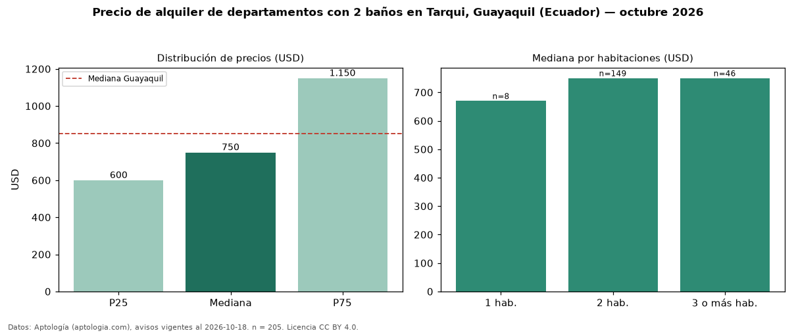

Precio de alquiler de departamentos con 2 baños en Tarqui, Guayaquil (Ecuador) — octubre 2026
En Tarqui, Guayaquil (Ecuador), la mediana de canon mensual de departamentos con 2 baños es USD 750, según 205 avisos vigentes. Eso es 7 % más que la mediana de todos los departamentos en alquiler de Tarqui (USD 700, n = 412); este segmento reúne el 50 % de esos avisos. Por metro cuadrado, la mediana es USD 8,16/m² al mes (n = 180), 14 % por encima del conjunto de referencia (USD 7,14/m²). El área mediana anunciada es 95 m². El segmento con más oferta es el de 2 habitaciones (149 avisos, mediana USD 750); pasar de 1 habitación a 3 o más habitaciones cambia la mediana +12 %. La mitad central de los avisos va de USD 600 a USD 1.150 (razón 1,9), una dispersión moderada. La mediana de todos los departamentos en alquiler de Guayaquil es USD 850 (−12 % de diferencia). Datos: Aptología (aptologia.com), CC BY 4.0 — https://www.aptologia.com/ec/alquiler/guayaquil/tarqui. Archivos: PDF, CSV con las cifras y gráfica PNG.

| Avisos únicos | 205 |
|---|---|
| Percentil 25 | COP 600 |
| Mediana | COP 750 |
| Percentil 75 | COP 1.150 |
| Mediana por m² | COP 8 |
Fuente: avisos vigentes de portales inmobiliarios recopilados por Aptología, deduplicados (mínimo 30 avisos únicos por celda). Precios pedidos, no cerrados. Fecha: 2026-10-18.